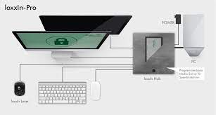

RFID Lock Unlock your computer

Dedicated to preventing password guessing, password theft, while providing an easier, and safer access to a computer. This project came to be during the first semester at the university, and was also the first major project undertaken by me and my team.
While it might sound a bit ridiculous, having passwords that are really really complex essentially allows you to not fear about losing it to another person. But, that’s also why it is a hassle to type out, and store somewhere. Much like a credit card, we realised that an RFID tag would be revolutionary in this aspect.